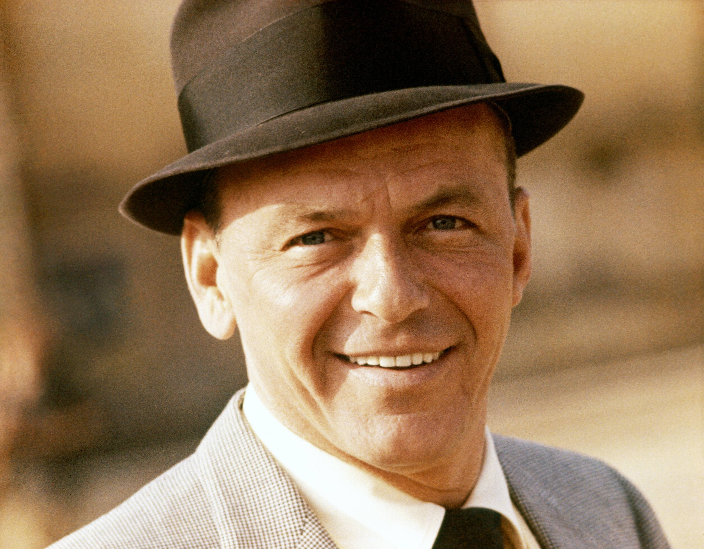

Frank Sinatra
Фрэнк Синатра так давно и несокрушимо возглавляет списки самых-самых (песен, артистов, голосов и так далее), что больше напоминает некое артистическое божество, чем живого человека. Его имя действительно первым приходит на ум, когда речь заходит о тех людях-символах, которые в массовом сознании безраздельно воплощают американскую музыкальную культуру. 9 кратный призёр Грэмми. За всем изобилием изданных Синатрой записей, за его почти безразмерным каталогом, продолжающим пухнуть год от года, недолго и проморгать самую суть его таланта. Между тем Синатра - это не просто баловень судьбы и удачно раскрученный шоумен, а, в первую очередь, фантастический интерпретатор, восприимчивый к веяниям времени и сумевший сохранить лучшие образцы американской поп-музыки для нескольких поколений меломанов всех рас и национальностей.
Францис Альберт Синатра (Francis Albert Sinatra) родился в Хобокене, штат Нью-Джерси, 12 декабря 1915 года. Он был единственным ребенком Долли и Энтони Мартина Синатры (Dolly & Anthony Martin Sinatra). Отец работал пожарным, и к музыке семья будущей американской суперзвезды не имела никакого отношения. Работать Фрэнк начал еще подростком. Он мечтал о профессии журналиста, и на первых порах устроился грузчиком в редакции газеты «Jersey Observer», потом переквалифицировался в копировальщика. Но даже обязанности репортера ему все еще не доверяли. Тогда Фрэнк поступил в школу секретарей, изучил машинопись и стенографию. И наконец его репортажи о незначительных спортивных событиях начали попадать в печать. В один прекрасный день 19-летний Фрэнк, который изредка пел для своего удовольствия, принял участие в популярном конкурсе талантов на местном радио. Вместе с тремя другими конкурсантами промоутеры отправили его в испытательный тур, назвав новоявленный вокальный квартет Hoboken Four.
После гастролей Синатра заключил первый профессиональный контракт. Платили ему 25 долларов в неделю. За это относительно щедрое вознаграждение ему пришлось не только петь в придорожном баре «The Rustic Cabin» в провинциальном городке, но и выполнять обязанности официанта, мастера церемоний и комического актера. Имея более-менее крепкую почву под ногами, Фрэнк смог наконец жениться на любви своего детства Нэнси Барбато (Nancy Barbato). В 40-е годы у них родилось трое детей: Нэнси Сандра, Фрэнки Уэйн и Кристина.
Популярные песни:
Let It Snow
My Way
The World We Knew [Over And Over]
Have Yourself A Merry Little Chri
Strangers in the Night